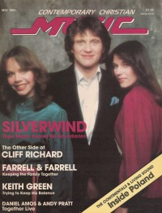

CMnexus
:
Contemporary Christian culture, music, and media.
Browse Magazines
Browse Profiles
cmnexus.org
CM
nexus
→
Profiles
→
S
Silverwind
On the cover

May 1982
CCM
Media coverage:
Nov 1981 in
CCM
"In Concert: Barry McGuire & Silverwind Aim Straight For The Heart", by
Patrick Kampert
May 1982 in
CCM
"The Good News According To Silverwind", by
Paul Baker
Feb 1985 in
Christian Life
"Tunes for the Times", by
Patrick Kampert
Mar 1987 in
CCM
"Notebook: Together Again for the First Time"
Albums & reviews:
1981
:
Silverwind
Mar 1981 in
CCM
Jun 1981 in
Campus Life
, by
Gord Wilson
1982
:
A Song In The Night
Jul 1982 in
CCM
, by
Steve Taylor
Dec 1982 in
Campus Life
, by
Gord Wilson
1985
:
By His Spirit
Jun 1985 in
CCM
, by
Bob Darden
Jul 1985 in
MusicLine
, by
Phillip R. Templeton
1986
:
Set Apart
Mar 1987 in
Charisma
, by
Steve Lawson
Mar 1987 in
Christian Life
, by
Steve Wamberg
,
Annie Wamberg
1999
:
The Unforgettable Hits
Books about Silverwind
"
Silverwind
" in
The Encyclopedia of Contemporary Christian Music
(
Mark Allan Powell
,
2002
)
CMnexus
(noun)
The magazine index
of modern music
and Christianity
© 2011 CMnexus. Last updated September 2019.
Contact:
Rants and other correspondence to:
editor -AT- cmnexus
-DØT- org
About